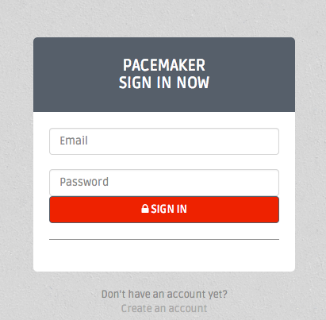
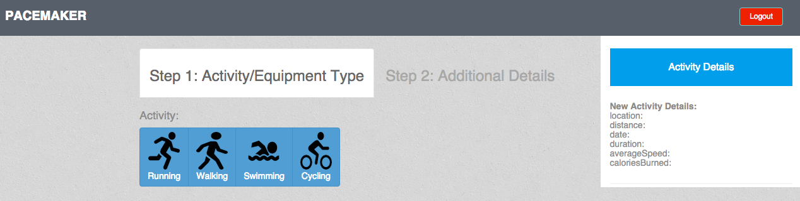
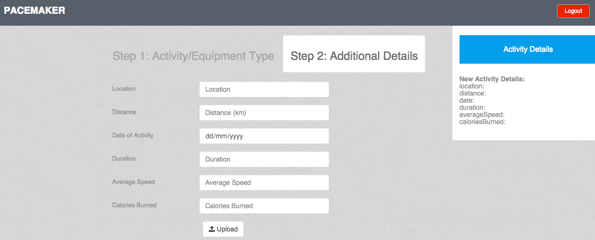
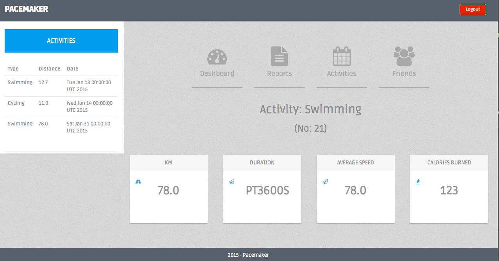
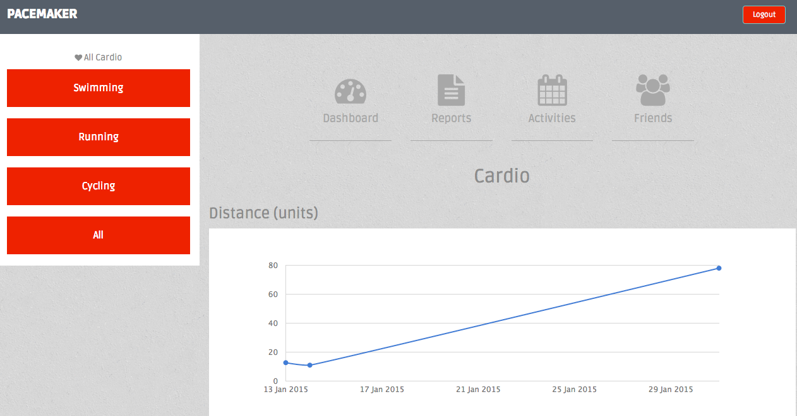
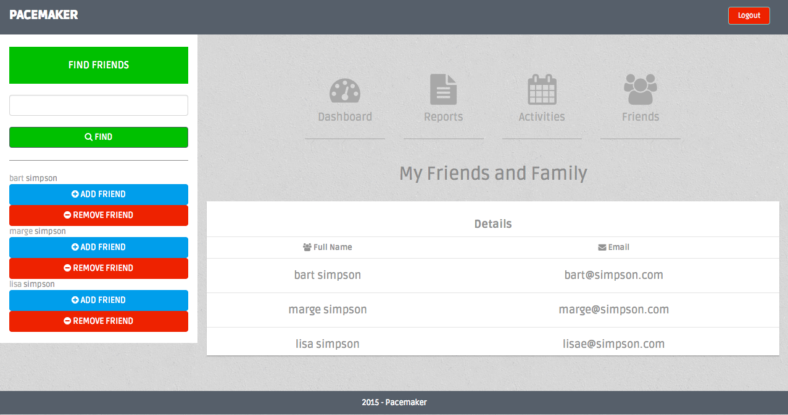
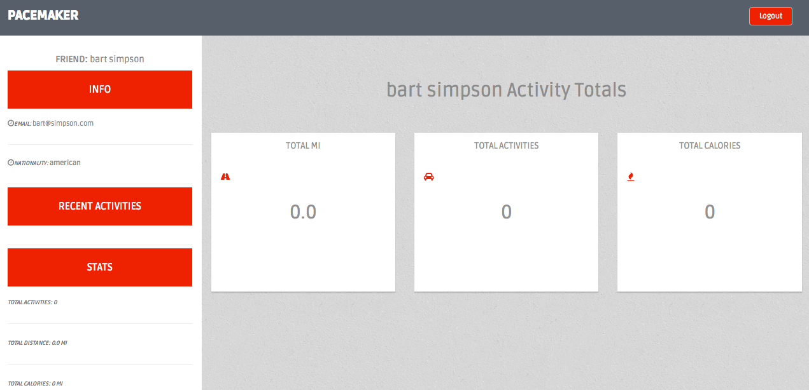

Architecture
.png of the architecture.
Features
As per Runkeeper
Demo
Login/Logout
- Sessions
- Password check
- HTML tags for required fields
- Secure API: token

Add New Activity
- Using AJAX to display details of the activity as the user is adding it in the right panel


Activities
- Displaying the most recently added activity
- Switching between activities from the left panel

Reports
- Switching between grouped reports from the left panel

Friends
- Search for a friend
- Add/invite a friend, remove/uninvite a friend

Friends
- View main dashboard of a found friend

Security
- Sessions (login, logout),
- Password check,
- HTML tags: size, max,
- Secure REST (token)
DX
Testing Models: User, Activity, Location, Friendship.
UX
- Bootstrap 3
- Kickcharts (Javascript)
- AJAX
THE END
BY Agnieszka Gancarczyk (20060828)